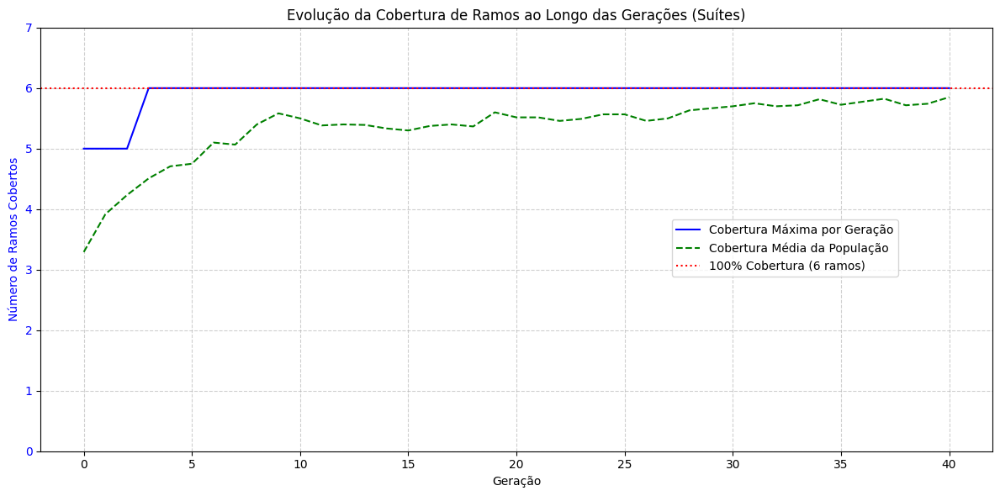

Workshop Prático: Caça aos Bugs Automatizada com Teste Baseado em Busca (SBST)#
Objetivo: Implementar um sistema de SBST do zero usando Python e a biblioteca DEAP. Nosso objetivo é gerar automaticamente um conjunto de casos de teste que maximize a cobertura de ramos de uma função com lógica complexa.
Passos:
Definir uma Função-Alvo: Criaremos uma função
classificador_complexocom vários caminhos lógicos difíceis de alcançar.Instrumentar o Código: Adicionaremos um mecanismo para rastrear quais ramos da função são executados por um determinado caso de teste.
Formular o Problema para DEAP: Definiremos a representação do indivíduo (o caso de teste), a função de fitness (cobertura de ramos) e os operadores genéticos.
Executar a Busca: Rodaremos o algoritmo genético e observaremos como ele evolui para encontrar um conjunto de testes que cobre 100% dos ramos.
Analisar os Resultados: Verificaremos a eficácia da busca e visualizaremos a convergência.
Parte 1: Configuração do Ambiente#
Primeiro, vamos instalar as bibliotecas necessárias e configurar o ambiente para garantir a reprodutibilidade dos nossos experimentos.
# @title Instalação e importação das bibliotecas
!pip install deap numpy matplotlib -q
import random
import numpy as np
import matplotlib.pyplot as plt
from typing import List, Tuple, Set, Any, Callable
import time
from deap import base, creator, tools, algorithms
# Configura a seed para reprodutibilidade
random.seed(42)
np.random.seed(42)
print("✅ Ambiente configurado com sucesso!")
[notice] A new release of pip is available: 25.0.1 -> 25.3
[notice] To update, run: pip install --upgrade pip
✅ Ambiente configurado com sucesso!
Parte 2: Função-Alvo e Instrumentação de Cobertura#
Nesta seção, criamos duas peças centrais:
CoverageInstrument: Uma classe simples que funcionará como um decorator para registrar quais ramos de uma função são executados.classificador_complexo: Nossa função-alvo, decorada com o instrumento. Ela contém 6 ramos lógicos, incluindo um que é particularmente difícil de ser ativado aleatoriamente (o “beco sem saída”).
# @title Implementação do Instrumento de Cobertura e da Função-Alvo
class CoverageInstrument:
"""Um decorator para instrumentar uma função e rastrear a cobertura de ramos."""
def __init__(self):
self.covered_branches: Set[int] = set()
def __call__(self, func: Callable) -> Callable:
"""Permite que a instância da classe seja usada como um decorator."""
self.func = func
# Injeta a si mesma na função para que ela possa registrar a cobertura
self.func.instrument = self
return self.func
def add(self, branch_id: int):
"""Registra que um ramo foi coberto."""
self.covered_branches.add(branch_id)
def reset(self):
"""Limpa o registro de cobertura antes de uma nova execução."""
self.covered_branches.clear()
def get_coverage(self) -> Set[int]:
"""Retorna o conjunto de ramos cobertos na última execução."""
return self.covered_branches
# Instancia nosso instrumento
instrument = CoverageInstrument()
# O número total de ramos que queremos cobrir
TOTAL_BRANCHES = 6
@instrument
def classificador_complexo(x: int, y: int, z: str) -> str:
"""Uma função com lógica complexa para servir de alvo para o SBST."""
# Acessa o instrumento injetado pelo decorator
instr = classificador_complexo.instrument
if x > 50:
if y < 25 and z == "beta":
instr.add(1) # Ramo 1
return "Categoria A"
else:
instr.add(2) # Ramo 2
return "Categoria B"
else:
if z == "alpha":
instr.add(3) # Ramo 3
return "Categoria C"
elif y > 75:
instr.add(4) # Ramo 4
return "Categoria D"
# Este é o nosso "beco sem saída", difícil de encontrar
elif x > 40 and y < 10 and z == "omega":
instr.add(5) # Ramo 5
return "Categoria SECRETA"
instr.add(6) # Ramo 6 (Default)
return "Categoria Padrão"
print(f"🎯 Função 'classificador_complexo' criada com {TOTAL_BRANCHES} ramos lógicos.")
# Exemplo de como obter a cobertura para um caso de teste
instrument.reset()
classificador_complexo(60, 20, "beta")
cobertura = instrument.get_coverage()
print(f"Exemplo: O caso de teste (60, 20, 'beta') cobre os ramos: {cobertura}")
🎯 Função 'classificador_complexo' criada com 6 ramos lógicos.
Exemplo: O caso de teste (60, 20, 'beta') cobre os ramos: {1}
Parte 3: Configuração do Algoritmo Genético com DEAP#
Agora, vamos traduzir o problema de geração de testes para o paradigma de um algoritmo genético.
Indivíduo: Um caso de teste, representado por uma lista
[x, y, z].Fitness: O número de ramos que um caso de teste consegue cobrir. Nosso objetivo é maximizar esse valor.
Operadores:
Geração: Criaremos indivíduos aleatórios dentro de um intervalo razoável.
Avaliação: A função de fitness que executa o teste e conta os ramos cobertos.
Crossover, Mutação e Seleção: Usaremos operadores padrão do DEAP, com uma mutação customizada para lidar com os diferentes tipos de dados (
intestr).
# @title Definição da Estrutura do AG (Fitness, Indivíduo/Suíte e Toolbox)
# Representaremos um indivíduo como uma SUÍTE de testes (vários casos [x, y, z]).
# O fitness mede a cobertura de ramos única alcançada pela suíte inteira (0..6).
# 1. Fitness e Indivíduo
# Protege contra reexecução desta célula em ambientes interativos (DEAP não permite recriar o mesmo tipo)
try:
creator.FitnessMax
except AttributeError:
creator.create("FitnessMax", base.Fitness, weights=(1.0,))
try:
creator.Individual
except AttributeError:
# Um indivíduo é uma lista de casos de teste (cada caso é [x, y, z]) com um atributo de fitness
creator.create("Individual", list, fitness=creator.FitnessMax)
# 2. Toolbox (Registro dos Operadores)
toolbox = base.Toolbox()
# Parâmetros da suíte
SUITE_SIZE = 8 # número de casos de teste por indivíduo/suíte
# Domínio de valores para os genes
POSSIBLE_Z_VALUES = ["alpha", "beta", "gamma", "delta", "epsilon", "omega"]
X_RANGE = (-100, 100)
Y_RANGE = (-100, 100)
# Geração de Genes: Funções para criar valores aleatórios para x, y, e z
toolbox.register("attr_x", random.randint, X_RANGE[0], X_RANGE[1])
toolbox.register("attr_y", random.randint, Y_RANGE[0], Y_RANGE[1])
toolbox.register("attr_z", random.choice, POSSIBLE_Z_VALUES)
# Um caso de teste é uma tripla [x, y, z]
def _make_case():
return [toolbox.attr_x(), toolbox.attr_y(), toolbox.attr_z()]
toolbox.register("attr_case", _make_case)
# Geração de Indivíduos (suítes) e População
# Cada indivíduo é uma lista de 'SUITE_SIZE' casos de teste
toolbox.register("individual", tools.initRepeat, creator.Individual, toolbox.attr_case, n=SUITE_SIZE)
toolbox.register("population", tools.initRepeat, list, toolbox.individual)
# Função de Avaliação (Fitness) da suíte
from typing import List, Tuple
def evaluate_coverage_suite(individual: List[List[Any]]) -> Tuple[int,]:
"""Executa a suíte de casos e retorna o número de ramos únicos cobertos (0..TOTAL_BRANCHES)."""
covered: Set[int] = set()
for case in individual:
# Garante formato [x, y, z]
if not isinstance(case, (list, tuple)) or len(case) != 3:
continue
x, y, z = case
instrument.reset()
try:
classificador_complexo(int(x), int(y), str(z))
except Exception:
# Casos inválidos simplesmente não contribuem
continue
covered.update(instrument.get_coverage())
# Early stop se já atingimos cobertura total
if len(covered) == TOTAL_BRANCHES:
break
return (len(covered),)
toolbox.register("evaluate", evaluate_coverage_suite)
# Operador de Mutação Customizado para suítes
from typing import Any
def clamp(v: int, lo: int, hi: int) -> int:
return max(lo, min(hi, v))
def mutate_test_suite(individual: List[List[Any]], indpb: float) -> Tuple[List[List[Any]],]:
"""Aplica mutação em cada caso da suíte e nos genes de cada caso.
indpb: probabilidade de mutação por gene.
"""
for case in individual:
# Mutação para x (inteiro)
if random.random() < indpb:
case[0] = clamp(int(case[0]) + int(random.gauss(0, 20)), X_RANGE[0], X_RANGE[1])
# Mutação para y (inteiro)
if random.random() < indpb:
case[1] = clamp(int(case[1]) + int(random.gauss(0, 20)), Y_RANGE[0], Y_RANGE[1])
# Mutação para z (string)
if random.random() < indpb:
case[2] = random.choice(POSSIBLE_Z_VALUES)
return (individual,)
# Registro dos operadores genéticos padrão
toolbox.register("mate", tools.cxTwoPoint)
# Probabilidade mais baixa por gene, pois há vários genes em uma suíte
toolbox.register("mutate", mutate_test_suite, indpb=0.15)
toolbox.register("select", tools.selTournament, tournsize=3)
print("✅ Toolbox do DEAP configurada para o problema de SBST (indivíduo = suíte de testes).")
✅ Toolbox do DEAP configurada para o problema de SBST (indivíduo = suíte de testes).
Parte 4: Execução da Busca e Análise dos Resultados#
Com tudo configurado, agora é a hora da mágica acontecer. Vamos executar o algoritmo genético e, em seguida, analisar o conjunto de testes que ele descobriu.
O nosso algoritmo não é o eaSimple padrão. Nós o adaptamos para um objetivo de SBST: em vez de buscar um único “melhor indivíduo”, queremos um conjunto de indivíduos que, coletivamente, maximizem a cobertura. Nossa lógica irá:
Executar o AG por várias gerações.
Manter um “arquivo” de todos os ramos já cobertos.
Ao final, selecionar um conjunto mínimo de casos de teste do
HallOfFameque, juntos, atingem a cobertura máxima encontrada.
# @title Execução do Algoritmo Genético E Coleta de Resultados
def run_sbst_ga():
"""Executa o algoritmo genético para gerar suítes de teste."""
pop_size = 120
num_generations = 40
pop = toolbox.population(n=pop_size)
# HallOfFame armazena as melhores suítes (maior cobertura)
hof = tools.HallOfFame(min(pop_size, 200))
# Estatísticas para acompanhar a evolução
stats = tools.Statistics(lambda ind: ind.fitness.values)
stats.register("avg", np.mean)
stats.register("max", np.max)
# Executa o algoritmo evolutivo
start_time = time.time()
pop, logbook = algorithms.eaSimple(pop, toolbox, cxpb=0.7, mutpb=0.3,
ngen=num_generations, stats=stats,
halloffame=hof, verbose=True)
end_time = time.time()
print(f"⏳ Tempo de execução: {end_time - start_time:.2f} segundos")
return logbook, hof
logbook, hof = run_sbst_ga()
# Saída de Célula Esperada:
# gen\tnevals\tavg \tmax
# 0 \t120 \t2.0 \t3
# ...
# 10 \t... \t3.5 \t5
# ...
# 25 \t... \t4.7 \t6 <-- máxima possível (6 ramos)
# 40 \t... \t~5.0\t6
gen nevals avg max
0 120 3.29167 5
1 93 3.91667 5
2 90 4.23333 5
3 91 4.50833 6
4 101 4.70833 6
5 105 4.75 6
6 104 5.1 6
7 95 5.06667 6
8 95 5.4 6
9 92 5.58333 6
10 91 5.5 6
11 89 5.38333 6
12 91 5.4 6
13 96 5.39167 6
14 94 5.33333 6
15 103 5.3 6
16 102 5.375 6
17 94 5.4 6
18 101 5.36667 6
19 91 5.6 6
20 83 5.51667 6
21 87 5.51667 6
22 92 5.45833 6
23 94 5.49167 6
24 93 5.56667 6
25 100 5.56667 6
26 98 5.45833 6
27 81 5.5 6
28 98 5.63333 6
29 91 5.66667 6
30 82 5.7 6
31 93 5.75 6
32 96 5.7 6
33 99 5.71667 6
34 89 5.81667 6
35 102 5.725 6
36 95 5.775 6
37 75 5.825 6
38 113 5.71667 6
39 101 5.74167 6
40 81 5.85 6
⏳ Tempo de execução: 0.20 segundos
# @title Análise do Conjunto de Testes Gerado
from typing import Set, List, Dict
def build_test_suite(hall_of_fame: tools.HallOfFame) -> tuple[Set[int], Dict[int, List[Any]]]:
"""
Constrói um conjunto de testes mínimo a partir do HallOfFame para cobrir todos os ramos encontrados.
Cada entrada do HoF é uma SUÍTE; percorremos os casos dentro de cada suíte e mapeamos o primeiro caso que cobre
cada ramo ainda não coberto.
"""
final_test_suite: Dict[int, List[Any]] = {}
overall_covered_branches: Set[int] = set()
# Itera sobre as melhores suítes encontradas
for suite in hall_of_fame:
for case in suite:
instrument.reset()
try:
classificador_complexo(*case)
except Exception:
continue
branches_covered_by_case = set(instrument.get_coverage())
# Verifica se este caso de teste cobre algum ramo NOVO
newly_covered = branches_covered_by_case - overall_covered_branches
if newly_covered:
for branch_id in newly_covered:
if branch_id not in final_test_suite:
final_test_suite[branch_id] = case
overall_covered_branches.update(newly_covered)
# Para se já cobrimos todos os ramos possíveis
if len(overall_covered_branches) == TOTAL_BRANCHES:
break
if len(overall_covered_branches) == TOTAL_BRANCHES:
break
return overall_covered_branches, final_test_suite
total_coverage, test_suite = build_test_suite(hof)
print("--- Análise do Conjunto de Testes Final ---")
print(f"🎯 Cobertura de Ramos Atingida: {len(total_coverage)} de {TOTAL_BRANCHES} ({len(total_coverage)/TOTAL_BRANCHES:.1%})")
print("📜 Casos de Teste Selecionados:")
if not test_suite:
print("Nenhum caso de teste efetivo foi gerado.")
else:
for branch, case in sorted(test_suite.items()):
formatted_case = f"(x={int(case[0])}, y={int(case[1])}, z='{str(case[2])}')"
print(f" - Ramo #{branch}: coberto por {formatted_case}")
# Saída de Célula Esperada:
# --- Análise do Conjunto de Testes Final ---
# 🎯 Cobertura de Ramos Atingida: 6 de 6 (100.0%)
# 📜 Casos de Teste Selecionados:
# - Ramo #1: coberto por (x=52, y=2, z='beta')
# - Ramo #2: coberto por (x=83, y=68, z='gamma')
# - Ramo #3: coberto por (x=1, y=60, z='alpha')
# - Ramo #4: coberto por (x=1, y=80, z='beta')
# - Ramo #5: coberto por (x=42, y=9, z='omega')
# - Ramo #6: coberto por (x=1, y=60, z='beta')
--- Análise do Conjunto de Testes Final ---
🎯 Cobertura de Ramos Atingida: 6 de 6 (100.0%)
📜 Casos de Teste Selecionados:
- Ramo #1: coberto por (x=59, y=-61, z='beta')
- Ramo #2: coberto por (x=100, y=-25, z='omega')
- Ramo #3: coberto por (x=19, y=79, z='alpha')
- Ramo #4: coberto por (x=-11, y=86, z='omega')
- Ramo #5: coberto por (x=47, y=-42, z='omega')
- Ramo #6: coberto por (x=-52, y=-55, z='gamma')
Parte 5: Visualização da Evolução#
Finalmente, vamos plotar um gráfico para visualizar como a cobertura de ramos da população evoluiu ao longo das gerações. Isso nos dá uma prova visual de que a busca não foi aleatória, mas sim um processo direcionado de otimização.
# @title Gráfico de Convergência da Cobertura
def plot_coverage_evolution(logbook):
"""Plota a evolução da cobertura máxima e média ao longo das gerações (0..TOTAL_BRANCHES)."""
gen = logbook.select("gen")
max_coverage = logbook.select("max")
avg_coverage = logbook.select("avg")
fig, ax1 = plt.subplots(figsize=(12, 6))
# Gráfico da cobertura
ax1.plot(gen, max_coverage, "b-", label="Cobertura Máxima por Geração")
ax1.plot(gen, avg_coverage, "g--", label="Cobertura Média da População")
ax1.set_xlabel("Geração")
ax1.set_ylabel("Número de Ramos Cobertos", color="b")
ax1.tick_params(axis='y', labelcolor='b')
ax1.set_ylim(0, TOTAL_BRANCHES + 1)
# Linha de 100% de cobertura
ax1.axhline(y=TOTAL_BRANCHES, color='r', linestyle=':', label=f'100% Cobertura ({TOTAL_BRANCHES} ramos)')
plt.title("Evolução da Cobertura de Ramos ao Longo das Gerações (Suítes)")
fig.legend(loc="center right", bbox_to_anchor=(0.9, 0.5))
fig.tight_layout()
plt.grid(True, linestyle='--', alpha=0.6)
plt.show()
plot_coverage_evolution(logbook)
# [GRÁFICO MOSTRANDO A LINHA DE COBERTURA MÁXIMA SUBINDO EM DEGRAUS ATÉ ATINGIR O VALOR 6]
# [A LINHA DE COBERTURA MÉDIA SOBE MAIS SUAVEMENTE, MAS TAMBÉM COM TENDÊNCIA DE ALTA]

🎉 Laboratório Concluído! 🎉#
Parabéns! Você construiu com sucesso um sistema de Teste Baseado em Busca.
Principais aprendizados:
Formulação é Chave: O sucesso do SBST depende de como traduzimos o problema de teste (representação, fitness) para o algoritmo de busca.
Cobertura como Guia: A cobertura de ramos é uma função de fitness muito mais poderosa do que a cobertura de sentenças, pois força a exploração de decisões lógicas.
Automação Inteligente: Em vez de adivinhar casos de teste, usamos a evolução para descobrir automaticamente as entradas necessárias para explorar partes complexas do código, incluindo aquele ramo “secreto” que seria muito difícil de encontrar manualmente.